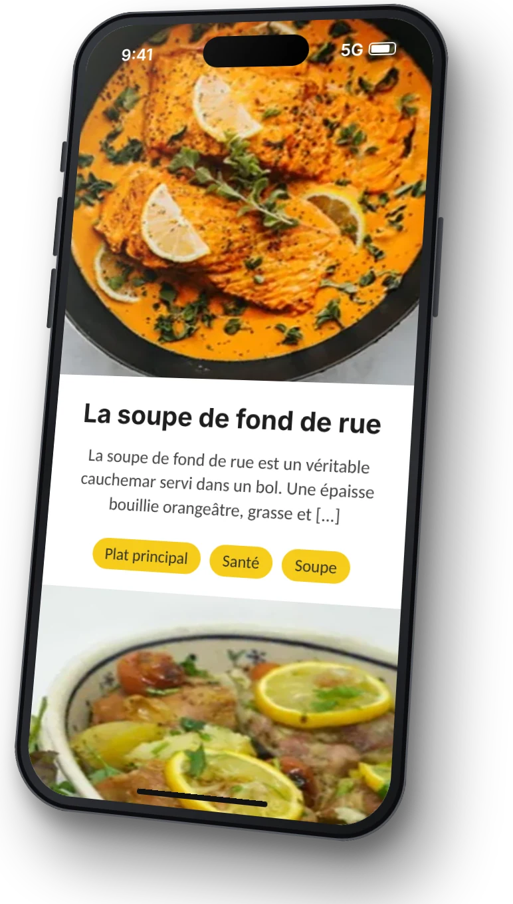
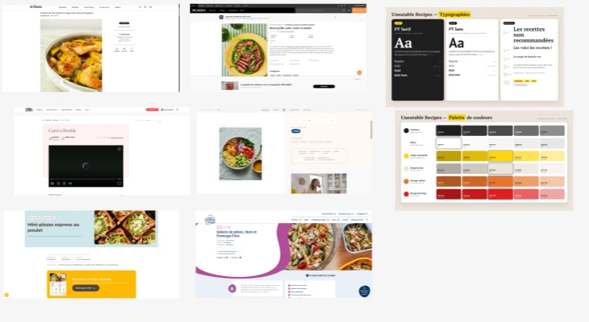
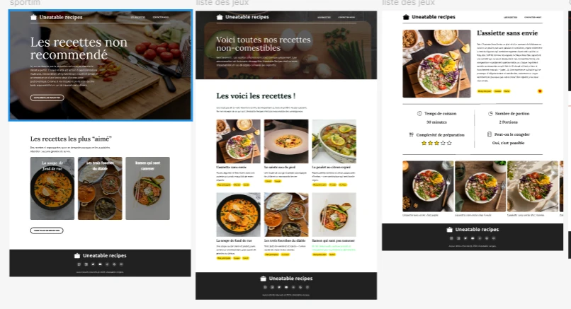
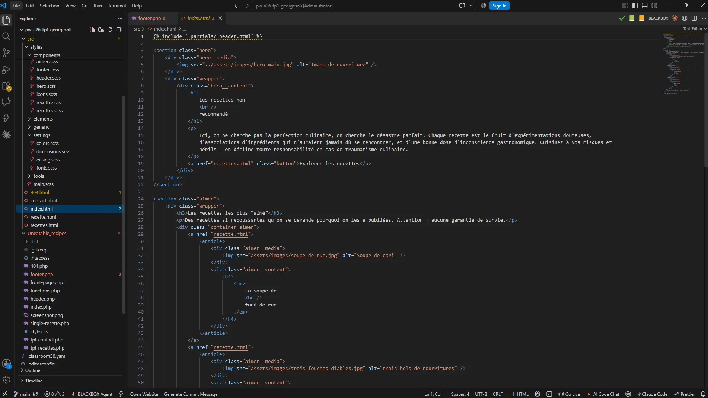
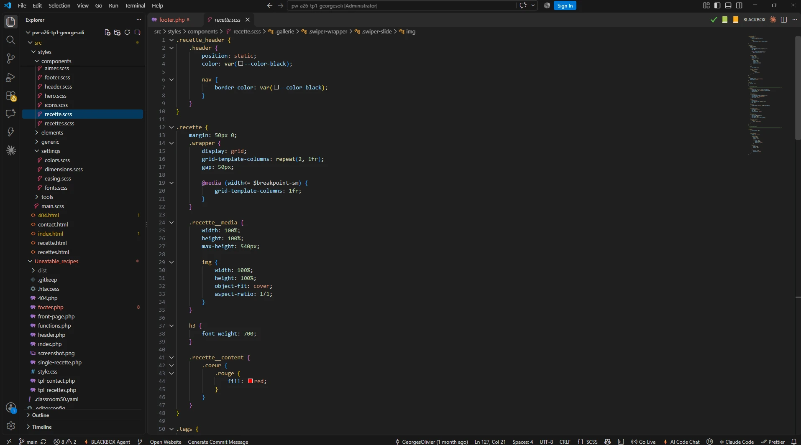
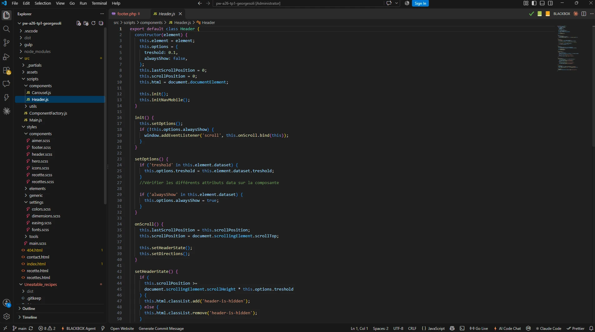

01
Recherche d’inspiration
Premièrement, j’ai cherché de l’ inspiration sur d’autres sites de recettes pour définir le style , les couleurs et l’ ambiance que je voulais donner au projet.
Olivier Georges
000%
Ce projet est un projet d’intégration Web en HTML, CSS et JavaScript . Après avoir intégré le site, je devais réussir à le transformer en thème WordPress fonctionnel.
Intégrateur - Seul - Projet scolaire - 2026
Tester le projet

Le projet UneatableRecipes a été réalisé dans le cadre du cours de production Web. Nous devions intégrer une maquette en HTML, CSS et JavaScript , puis l’adapter en thème WordPress pour que le contenu, comme les recettes, puisse être géré facilement à partir du tableau de bord.
Designer et intégrateur Web . J’ai réalisé le projet au complet : la recherche d’inspiration , la création de la maquette Figma , l’intégration en HTML, CSS et JavaScript et la conversion du site en thème WordPress .
L’IA m’a aidé à corriger et à générer certains textes, à créer des images et à débugger des problèmes. L’intégration et le thème WordPress ont été faits par moi.

Premièrement, j’ai cherché de l’ inspiration sur d’autres sites de recettes pour définir le style , les couleurs et l’ ambiance que je voulais donner au projet.

Deuxièmement, j’ai conçu la maquette du site dans Figma : la mise en page, les typographies , les couleurs et les composantes de chaque page.

Troisièmement, l’intégration de la maquette en HTML , puis l’ajout du CSS et du responsive pour donner vie au site sur tous les écrans .

Quatrièmement, l’ajout du JavaScript pour rendre le site interactif : le menu, les filtres et les animations.

Dernièrement, la conversion du site en thème WordPress , pour que les recettes puissent être ajoutées et modifiées directement à partir du tableau de bord .
Rassembler plusieurs inspirations et en garder seulement les meilleures idées pour créer une identité propre au projet.
Bien définir les couleurs , les typographies et les composantes dans Figma, puis réutiliser le même CSS à chaque étape.
Découper le site en gabarits WordPress et structurer chaque recette pour qu’elle se gère directement à partir du tableau de bord .
En conclusion, ce projet m’a permis de réaliser un site complet, de la recherche d’inspiration et de la maquette Figma jusqu’à l’ intégration en HTML, CSS et JavaScript . La conversion en thème WordPress m’a appris à passer d’un site statique à un site dynamique , facile à mettre à jour pour quelqu’un qui ne code pas. Ce projet représente donc un bon récapitulatif de mes compétences en design et en intégration Web .
Retourner aux projets
Projet Site de recettes
Dans ce projet, l’IA a été utilisée comme outil d’assistance .
Corriger et générer certains textes du site.
Créer des images utilisées dans le site.
M’aider à débugger des problèmes que je n’arrivais pas à régler.
La maquette Figma, l’intégration HTML, CSS et JavaScript et le thème WordPress ont entièrement été faits par moi.
Cette partie concerne seulement la page de présentation que vous lisez, pas le projet lui-même.
L’IA Claude (Anthropic) m’a aidé à rédiger et à corriger les textes de présentation à partir de mes notes.
Elle a écrit les textes alternatifs (alt) des images pour l’accessibilité.
Elle m’a aidé à reformuler la description de mon rôle.
Elle a ajusté l’affichage de la page sur mobile, comme les icônes des outils utilisés.
Design, intégration et thème WordPress : Olivier Georges
Certaines images et certains textes : générés avec l’IA
Projet scolaire réalisé en 2026, sans but commercial.